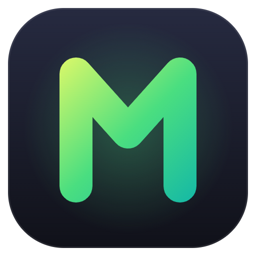

Política de privacidade
MyMusic — cifras e repertórios · atualizada em 20/10/2026
O MyMusic é um app pessoal e gratuito para guardar cifras, montar repertórios e tocar ao vivo (Android, Windows e navegador). Esta página explica quais dados ele usa e para quê.
O que o app guarda
- Da sua conta Google: só o e-mail e o nome, para identificar quem é dono de cada música e repertório e mostrar o seu nome para as pessoas dos seus grupos.
- O que você cria: músicas (letra, acordes, tom, anotações, tags), repertórios, grupos e quem participa deles, sugestões de mudança e o histórico de versões.
- No seu aparelho: uma cópia das músicas e repertórios, para o app funcionar sem internet, e as suas preferências (tema, tamanho da fonte, pedal).
Onde fica e quem vê
- Os dados ficam no Google Firebase (Firestore e Authentication).
- As músicas que você cria entram no acervo geral, que todas as pessoas que usam o app podem ver. Elas continuam suas: os outros só podem sugerir mudanças.
- Repertórios e grupos são vistos só pelas pessoas que fazem parte do grupo.
- Se você usar a cópia de segurança no Google Drive, ela fica numa pasta privada do app na sua conta (só o MyMusic acessa).
- A busca de letra envia o nome da música para o LRCLIB; nenhum dado seu vai junto.
O que o app não faz
- Não vende nem compartilha os seus dados com ninguém.
- Não mostra anúncios e não usa rastreamento ou análise de uso.
- Não lê os seus arquivos do Google Drive, só a pasta privada do próprio app.
Apagar os seus dados
Você pode apagar as suas músicas e repertórios pelo próprio app. Para apagar tudo, inclusive a sua conta e os grupos, mande um e-mail para mviniciusdospassos@gmail.com e eu apago em até 30 dias. Também dá para tirar o acesso do MyMusic à sua conta Google em myaccount.google.com/permissions.
Contato
Dúvidas: mviniciusdospassos@gmail.com.